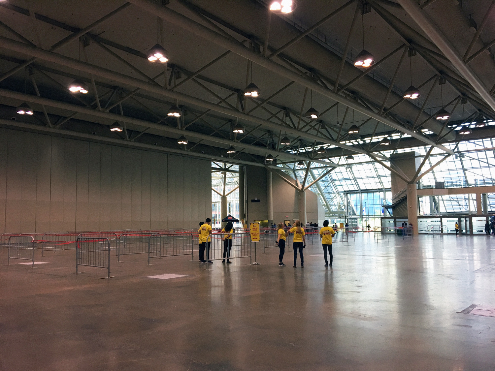

The problem is that our app was only being used by 33% of our event organizers. On top of that, we were averaging a low rating of 2.5 stars on the Apple and Android app stores.
Problem Diagnosis
We needed to dive deeper into why Ticket Manager was received so poorly in app stores. We dug into our main users, their usage frequency of our app and how it compares against competitors in the app’s landscape.
Main Users: The Event Organizers
We spoke to various types of our primary users such as organizers for events in city venues, local workshops, conferences and music festivals. We also interviewed our Sales and Support teams given they are on the front lines in order to collect diverse feedback. To get an even deeper level of sympathy with our main users, we particpated in ethnographic field studies by attending events to observe firsthand how Ticket Manager was being used in-action.
Behind the scenes at Cask Days
Waiting for doors to open at Canada 2020
The calm before the storm at LEGO Imagine Nation Tour
Competitors
We reviewed our competitor’s overall app store ratings such as looking at the total number of downloads, user reviews and determining which features made them unique.
Results of Problem Diagnosis
From this study, we could further segment our main user into four groups: large event hosts, small event hosts, volunteers in charge of selling tickets and volunteers in charge of checking in guests. We also broke down the users by their attributes, pain points, motivations, goals and responsibilities.
.png)
.png)
.png)
.png)
User personas we discovered through qualitative research and ethnographic field studies
This helps us gauge user needs and pain points that were felt by event organizers. These insights included: the need for faster set up, clearer communication and a simpler selling process.
We reflected on Ticket Manager's AARRR metrics (acquisition, activation, revenue, retention, and referral) and set out to improve in several of these areas.

Our primary objective was to focus around Retention, while Referral and Acquisition were secondary.
Retention
Simplify the Ticket Manager experience and increase DAU/MAU.
Referral
Increase the number of downloads and improve our app store ratings.
Acquisition
Promote Ticket Manager as the primary method of at-the-door management so that more hosts are aware of it.
Improving Retention
We defined “simplicity” by auditing current usability issues and defined the ‘Jobs to be Done’ for Ticket Manager to:
- “Seamlessly check-in my attendees at the door of my event(s)”
- “Sell tickets at the door of my event(s)”
I deconstructed the app into a sitemap to provide a visual understanding of Ticket Manager’s navigational structure and information architecture of what actions and which content is shown for each page.
The sitemap informed the user’s journey we designed. My team (developers, a product manager and myself) captured different flows for each of the four groups of main users we discovered during the events we attended in-person. Afterwards, we were able to pinpoint exactly where in the user’s journey needed improvement and developed mockups accordingly.

One of the user journeys that was designed with wireframes
I user tested the mockups using a combination of:
- Internal critiques for initial feedback
- Usertesting.com for immediate feedback on smaller functions and to play the role of “a volunteer”
- Real users for testing a full walkthrough of the app
I find that making mockups too simple will not draw the best feedback from users, but on the other end, mockups overly polished doesn’t offer room for sharing ideas and encourages the user to solely look for flaws. I also ensured that copy was consistent and strong to maintain clear communication for the testers.


An evolution of Ticket Manager explorations
Results
After weeks of development, here are the updates made to the initial release of Ticket Manager:
The app is launched with more intelligent defaults settings
When a user opens up Ticket Manager, their upcoming event is automatically pre-selected whereas before, a user would need to search and select their event time slots between scanning or selling tickets. After user interviews, we discovered a host would not have the need to select events further than a week away from their event.
“Check-in” confirmation is clear and undisruptive
Instead of blocking out the entire screen whenever you check in an attendee, we show a notification that covers a third of the scanning camera. That way, you can still continue scanning without having to dismiss confirmations. We improved color choices to give immediate feedback on a valid or invalid ticket that is easily recognizable, especially for first-time users.
Selling tickets in fewer steps
When you wanted to sell tickets, we would previously prompt users to select which event and which ticket types they were selling. To speed up this process, we removed the two steps by simply including all events that are sellable on one screen.
Personal information questions was asked during checkout which caused friction and confusion during on-site hours. We decided to only prompt these questions after a ticket had been purchased to shorten the buying process.
We also incorporated “card.io” to speed up the process of capturing payment information by allowing users to scan their cards instead of manually inputting credit card information.
Organizing the guestlist
For multi-day events, we discovered it would be difficult to differentiate a guest who had purchased tickets to more than one day. We decided to add additional date information to the event’s guest list in order for the user to quickly search and locate an already confirmed attendee.
Improving Referral
Ticket Manager wasn’t getting enough reviews, and the ones that did come through weren’t positive for that matter. With the release of this new improved version, we wanted to attract fresh reviewers and gather candid feedback. We considered following up events with an email or sending a monthly survey, however, there was too much risk of those emails being missed or disregarded.
After doing research on app reviews, we decided to build an in-app NPS score. The greatest challenge was figuring out when to prompt it without affecting the user’s experience or it being missed. We decided to send the prompt after the event is checked in at 80%, knowing that at that point, the on-site scanning process has slowed down. With the NPS score, a low rating would further prompt for suggestions. A high rating would redirect the user to the app store to leave a positive review.

Variation of in-app NPS
Released version of in-app NPS
Improving Acquisition
To increase exposure of Ticket Manager, we did a deep dive in our sales and onboarding process to understand when it was being presented to our main user. We noticed a gap from when an event organizer creates their event and the day of their actual event. We decided to add a section to the ‘Your event is happening in 24 hours’ email to educate users on Ticket Manager and how to use it while still giving them enough time to set up.
Of course, we updated our app store screenshots and redesigned a landing page so that our Sales team could re-direct potential users to Ticket Manager.